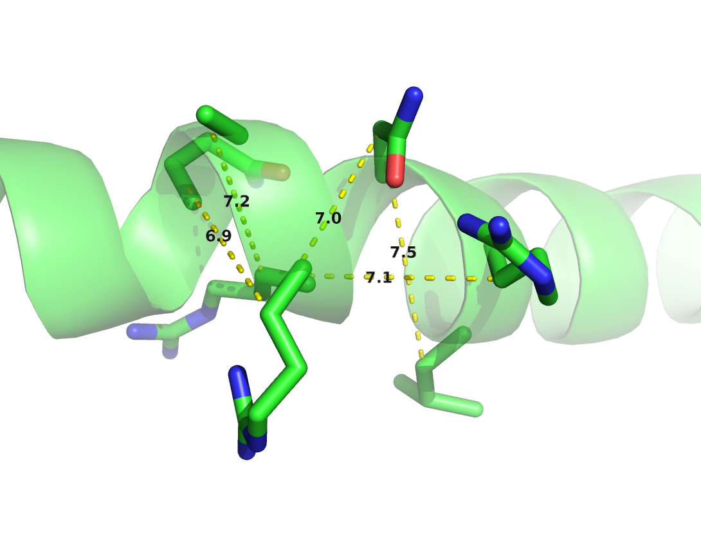
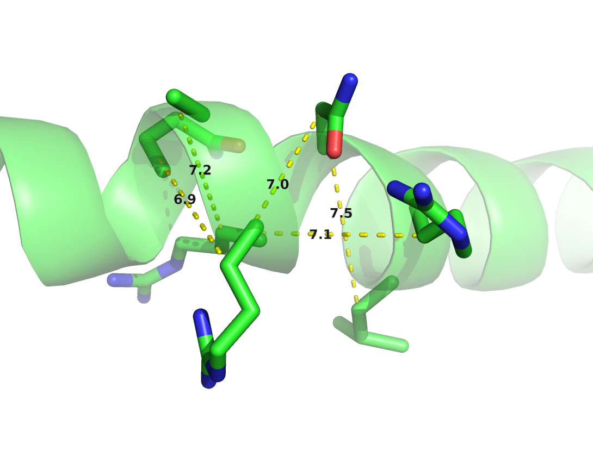

1.3 Contact Prediction
Contact Prediction refers to the prediction of physical contacts between amino acid side chains in the 3D protein structure, given the protein sequence as input.
Idea first in1984 with Shneder and Goebbels based on the obersavtion of compensatory or correlated mutations:
contact prediction methods aim to identify correlated mutations from an alignment of homologue protein sequences. main assumption is that two interacting amino acid residues are coevolving: mutation of one of the two residues can be compensated by mutation of the other residue
1.3.1 Local methods
MI and correlation measures suffer from transitivity of correlations
1.3.2 Global methods
Disadvantage of local models: they cannot distuinguish between causation and correlation: transitivity effects Global methods can do that by making predictions for a single residue pair while considering all other pairs in the protein.
Most prominent model that is able to do that is the Pott’s Model which is a maximum entropy model which is explained in detail in section
covariation versus causation phenomenon. Consider the following situation: Site A physically interacts and covaries with site B; site B physically interacts and covaries with site C; but site A and site C do not physically interact. Site A can covary with site C in spite of no physical interaction between A and C. [lapedes]
general sentence to maxent models tht are described in section 1.4.
In 1999 Lapedes et al. were the first to apply maximum entropy models to the problem of predicting residue pairs in spatial proximity and thus entangling transitive effects [29]. They used an iterative Monte Carlo procedure to obtain estimates of the partition function. As the calculations involved were very time-consuming and at that time required supercomputing resources, the wider implications were not noted.
In 2009 Weight et al proposed an iterative message-passing algorithm, here referred to as mpDCA, to approximate the partition function [30]. Eventhough their approach is computationally very expensive and in practive only applicable to small proteins, they obtained remarkable results for the two-component signaling system in bacteria.
Balakrishnan et al [31] were the first to apply pseudo-likelihood approximations to the full likelihood in 2011. The pseudo-likelihood optimizes a different objective and replaces the global partition function \(Z\) with local estimates. Balakrishnan and colleagues applied their method GREMLIN to learn sparse graphical models for 71 protein families. In a follow-up study in 2013 [32], an improved version of GREMLIN incorporating prior information was evaluated in a comprehensive benchmark tailored towards the contact prediction problem.
Also in 2011, Morcos et al. introduced a naive mean-field inversion approximation to the partition function, named mfDCA [33]. This method allows for drastically shorter running times as the mean-field approach boils down to inverting the empirical covariance matrix calculated from observed amino acid frequencies for each residue pair \(i\) and \(j\) of the alignment. This study performed the first high-throughput analysis of intradomain contacts for 131 protein families and facilitated the prediction of protein structures from accurately predicted contacts in [34].
A related approach to mean-field approximation is sparse inverse covariance estimation, named PSICOV, by Jones et al [35]. They use L1-regularization, known as graphical Lasso, to invert the correlation matrix and learn a sparse graphical model [36]. Both procedures, mfDCA and PSICOV, assume the model distribution to be a multivariate Gaussian. It has been shown by Banerjee et al. (2008) that this dual optimization solution also applies to binary data (as is the case in this application). In order to represent the MSA as continuous distributed, each position is encoded as a 20-dimensional binary vector.
Another related approach to mfDCA and PSICOV is gaussianDCA, proposed in 2014 by Baldassi et al. [37]. Similar to the other both approaches, they model the data as multivariate Gaussian but within a simple Bayesian formalism by using a suitable prior and estimating parameters over the posterior distribution.
So far, pseudo-likelihood maximization has proven to be the most accurate approach with respect to the standard evaluation procedures for contact prediction presented in section 1.3.4. Currently, there exist several implementations of pseudo-likelihood maximization that vary in slight details, perform similarly and thus are equally popular in the community, such as CCMpred [38], plmDCA[39] and GREMLIN [32]. The general approach for pseudo-likelihood optimization is described in detail in section 1.4.3.
A method not using the maxent model: In 2010, Burger and Nijmwegen developed a Bayesian network model [40] that is able to disentangle direct from indirect correlations and introducing informative priors to improve precision. independently of weight in 2009
1.3.3 Meta-predictors
- combining different approaches
- jones et al: overlap between methods but also many unique predictions
- machine learning methods incorporate sequence-derived features:
- secondary structure predictions
- solvent accessibilty
- contact potentials
- msa properties
- pssms
- physico-chemcial properties of amino acids
However, Meta-predictors will improve if basic methods improve. Ultra-deep learning paper identifies coevolution features as crucial feature.
1.3.4 Evaluating Contact Prediction Methods
Choosing an appropriate benchmark for contact prediction methods depends on the further utilization of the predictions. Most prominently, predicted contacts are used to assist structure prediction as outlined in section 1.2.3. Therefore, one could in fact assess the quality of structural models computed with the help of predicted contacts. However, predicting structural models adds not only another layer of computational complexity but also raises questions about implementation details of the folding protocol. Generally it has been found that a small number of accurate contacts is sufficient to constrain the overal protein fold as discussed in section 1.2.3.
From these considerations emerged a standard benchmark that evaluates the mean precision over a testset of proteins with known high quality 3D structures with respect to the top scoring predictions from every protein. The number of top scoring predictions per protein is typically normalized with respect to protein length \(L\) and precision is defined as the number of true contacts among the top scoring predicted contacts. Usually, a pair of residues is defined to be in contact when the distance between their \(\Cb\) atoms (\(C\alpha\) in case of glycine) is less than \(8 \AA \; \;\) in the reference protein structure [41].
Contact Definition
However, whether two residues truly interact in a protein structure depends only marginally on the distance between their \(\Cb\) atoms. More importantly, interactions between side-chains depend on their physico-chemical properties, on their orientation and vary within the vast number of alternative environments within proteins [42] (see section 1.1.1). Therefore, a simple \(\Cb\) distance threshold cannot capture the true interaction preferences of amino acids and yields an imperfect gold-standard for benchmarking.
Other distance thresholds or definitions for contacts (e.g minimal atomic distances or distance between functional groups) have been studied as well. In fact, Duarte and colleagues found that using a \(\Cb\) distance threshold between 9\(\AA \; \;\) and 11\(\AA \; \;\) yields optimal results when predicting the 3D structure from the respective contacts [43].
Anishchenko and colleagues [44] analysed false positive predictions with respect to a minimal atom distance threshold \(< 5 \AA \; \;\), as they found that this cutoff optimally defines direct physical interactions of residue pairs.
With regard to the utilization of contacts for structure prediction, a simple \(\Cb\) cutoff is nonetheless a convenient choice, as this threshold can be easily implemented as a restraint in common structure predictions protocols (e.g Modeller).
Sequence Separation
Local residue pairs separated by only some positions in sequence (e.g \(|i-j| < 6\)) are usually filtered out for evaluation of contact prediction methods. They are trivial to predict as they typically correspond to contacts within secondary structure elements and reflect the local geometrical constraints. Figure 1.3 shows the distribution of \(\Cb\) distances for various minimal sequence separation thresholds.
Figure 1.3: Distribution of residue pair \(\Cb\) distances over all proteins in the dataset (see Methods 6.1) at different minimal sequence separation thresholds: blue = \(|i-j| > 1\) (all residue pairs), orange = \(|i-j| > 6\), green = \(|i-j| > 12\), red = \(|i-j| > 24\).
Without filtering local residue pairs (sequence separation 1), there are several additional peaks in the distribution around \(5.5\AA \; \;\), \(7.4\AA \; \;\) and \(10.6\AA \; \;\) that can be attributed to local interactions in e.g. helices (see Figure 1.4).
 

Figure 1.4: \(\Cb\) distances between neighboring residues in \(\alpha\)-helices. Left: Direct neighbors in \(\alpha\)-helices have \(\Cb\) distances around \(5.4\AA\; \;\) due to the geometrical constraints from \(\alpha\)-helical architecture. Right: Residues separated by two positions (\(|i-j| = 2\)) are less geometrically restricted to \(\Cb\) distances between \(7\AA\; \;\) and \(7.5\AA\; \;\).
Commonly, sequence separation bins are applied to distuinguish short (\(6 < |i-j| \le 12\)), medium (\(12 < |i-j| \le 24\)) and long range (\(|i-j| > 24\)) contacts [41]. Especially long range contacts are of importance for structure prediction as they are informative and able to constrain the overal fold of a protein [???].
CASP
CASP, the well-respected and independent competition for the structural bioinformatic’s community that is taking place every two years, introduced the contact prediction category in 1996 and developed a standard procedure for the assessment of predictions. The precision of predicted long range (\(|i-j| > 24\)) contacts is assessed based on a \(8 \AA \; \; \Cb\) distance threshold for proteins with no (or only hard to detect) structural homologs. During CASP11 further evaluation metrics have been introduced, such as Matthews correlation coefficient and area under the precision-recall curve.
1.3.5 Pitfalls
Figure 1.5: Distribution of PFAM family sizes. Less than half of the families in PFAM (7990 compared to 8489 families) do not have an annotated structure. The median family size in number of sequences for families with and without annotated structures is 185 and 827 respectively. Data taken from PFAM 31.0 (March 2017, 16712 entries).
Coevolution of residues can be mediated by intermediate molecules (e.g metal ions) and will not always imply spatial proximity in structure [33].
Transitivity can lead to correlation signals.
Phylogenetic bias can also lead to correlations.
Some of these distant dependencies have been suggested to be caused by homooligomeric interactions [14,22][40][33].
Alternative conformations may lead to false positive predictions [33]. Structural variation within protein families.
Sampling bias needs to be taken into account. See sequence reweighting strategies in methods section
That is, very low entropy columns have on average almost twice as many contacts as high entropy columns[40]….reiterates the well-known dependence between surface accessibility and conservation…Obviously, since this position shows no variation whatsoever it cannot display any signs of statistical dependency with any other column, even though it may contact many other residues. This is a basic limitation of using statistical dependency for contact prediction that cannot be avoided
entropy bias that arises since the strength of covariation correlates with product of entropies h(i) of participating columns i
- theoretical upper boundary on precision: simply not all contacts within 8A interact with each other and therefore will never be detected using co-variance methods –> influences sensitivity.
- strongly conserved residues can also not show co-variance signals –> influences sensitivity
1.3.5.1 Correlation vs Causation
One important shortcoming of covariance approaches arises from the fact that chains of amino acid interactions are very common in protein structures and lead to direct as well as indirect correlation signals [29] [40].
Many erronous couplings occur due to the correlation versus causation phenomenon. Considering three protein residues. Residue A interacts with residue B and B interacts with residue C. Residue A and C do not physically interact, but there will still be a correlation between A and C. These transitive effects of covariation need to be disentangled to obtain the true coupling signal. Traditional covariance methods are unable to distinguish direct and indirect correlations.
References
29. Lapedes, A., Giraud, B., Liu, L., and Stormo, G. (1999). Correlated mutations in models of protein sequences: phylogenetic and structural effects. 33, 236–256. Available at: http://www.citeulike.org/user/qluo/article/5092214.
30. Weigt, M., White, R.A., Szurmant, H., Hoch, J.A., and Hwa, T. (2009). Identification of direct residue contacts in protein-protein interaction by message passing. Proc. Natl. Acad. Sci. U. S. A. 106, 67–72. Available at: http://www.pnas.org/content/106/1/67.abstract.
31. Balakrishnan, S., Kamisetty, H., Carbonell, J.G., Lee, S.-I., and Langmead, C.J. (2011). Learning generative models for protein fold families. Proteins 79, 1061–78. Available at: http://www.ncbi.nlm.nih.gov/pubmed/21268112.
32. Kamisetty, H., Ovchinnikov, S., and Baker, D. (2013). Assessing the utility of coevolution-based residue-residue contact predictions in a sequence- and structure-rich era. Proc. Natl. Acad. Sci. U. S. A. 110, 15674–9. Available at: http://www.pubmedcentral.nih.gov/articlerender.fcgi?artid=3785744{\&}tool=pmcentrez{\&}rendertype=abstract.
33. Morcos, F., Pagnani, A., Lunt, B., Bertolino, A., Marks, D.S., Sander, C., Zecchina, R., Onuchic, J.N., Hwa, T., and Weigt, M. (2011). Direct-coupling analysis of residue coevolution captures native contacts across many protein families. Proc. Natl. Acad. Sci. U. S. A. 108, E1293–301. Available at: http://www.pnas.org/content/108/49/E1293.full.
34. Marks, D.S., Colwell, L.J., Sheridan, R., Hopf, T.A., Pagnani, A., Zecchina, R., and Sander, C. (2011). Protein 3D structure computed from evolutionary sequence variation. PLoS One 6, e28766. Available at: http://dx.plos.org/10.1371/journal.pone.0028766.
35. Jones, D.T., Buchan, D.W.A., Cozzetto, D., and Pontil, M. (2012). PSICOV: precise structural contact prediction using sparse inverse covariance estimation on large multiple sequence alignments. Bioinformatics 28, 184–90. Available at: http://bioinformatics.oxfordjournals.org/content/28/2/184.full.
36. Friedman, J., Hastie, T., and Tibshirani, R. (2008). Sparse inverse covariance estimation with the graphical lasso. Biostatistics 9, 432–41. Available at: http://biostatistics.oxfordjournals.org/content/9/3/432.abstract.
37. Baldassi, C., Zamparo, M., Feinauer, C., Procaccini, A., Zecchina, R., Weigt, M., and Pagnani, A. (2014). Fast and accurate multivariate gaussian modeling of protein families: predicting residue contacts and protein-interaction partners. PLoS One 9, e92721. Available at: http://dx.plos.org/10.1371/journal.pone.0092721.
38. Seemayer, S., Gruber, M., and Söding, J. (2014). CCMpred-fast and precise prediction of protein residue-residue contacts from correlated mutations. Bioinformatics, btu500. Available at: http://bioinformatics.oxfordjournals.org/content/early/2014/08/12/bioinformatics.btu500.
39. Ekeberg, M., Hartonen, T., and Aurell, E. (2014). Fast pseudolikelihood maximization for direct-coupling analysis of protein structure from many homologous amino-acid sequences. J. Comput. Phys. 276, 341–356. Available at: http://www.sciencedirect.com/science/article/pii/S0021999114005178.
40. Burger, L., and Nimwegen, E. van (2010). Disentangling direct from indirect co-evolution of residues in protein alignments. PLoS Comput. Biol. 6, e1000633. Available at: http://dx.plos.org/10.1371/journal.pcbi.1000633.
41. Monastyrskyy, B., D’Andrea, D., Fidelis, K., Tramontano, A., and Kryshtafovych, A. (2015). New encouraging developments in contact prediction: Assessment of the CASP11 results. Proteins. Available at: http://www.ncbi.nlm.nih.gov/pubmed/26474083.
42. Betts, M.J., and Russell, R.B. Amino Acid Properties and Consequences of Substitutions. In Bioinforma. genet. (Chichester, UK: John Wiley & Sons, Ltd), pp. 289–316. Available at: http://doi.wiley.com/10.1002/0470867302.ch14.
43. Duarte, J.M., Sathyapriya, R., Stehr, H., Filippis, I., and Lappe, M. (2010). Optimal contact definition for reconstruction of contact maps. BMC Bioinformatics 11, 283. Available at: http://www.biomedcentral.com/1471-2105/11/283.
44. Anishchenko, I., Ovchinnikov, S., Kamisetty, H., and Baker, D. (2017). Origins of coevolution between residues distant in protein 3D structures. Proc. Natl. Acad. Sci., 201702664. Available at: http://www.ncbi.nlm.nih.gov/pubmed/28784799 http://www.pnas.org/lookup/doi/10.1073/pnas.1702664114.